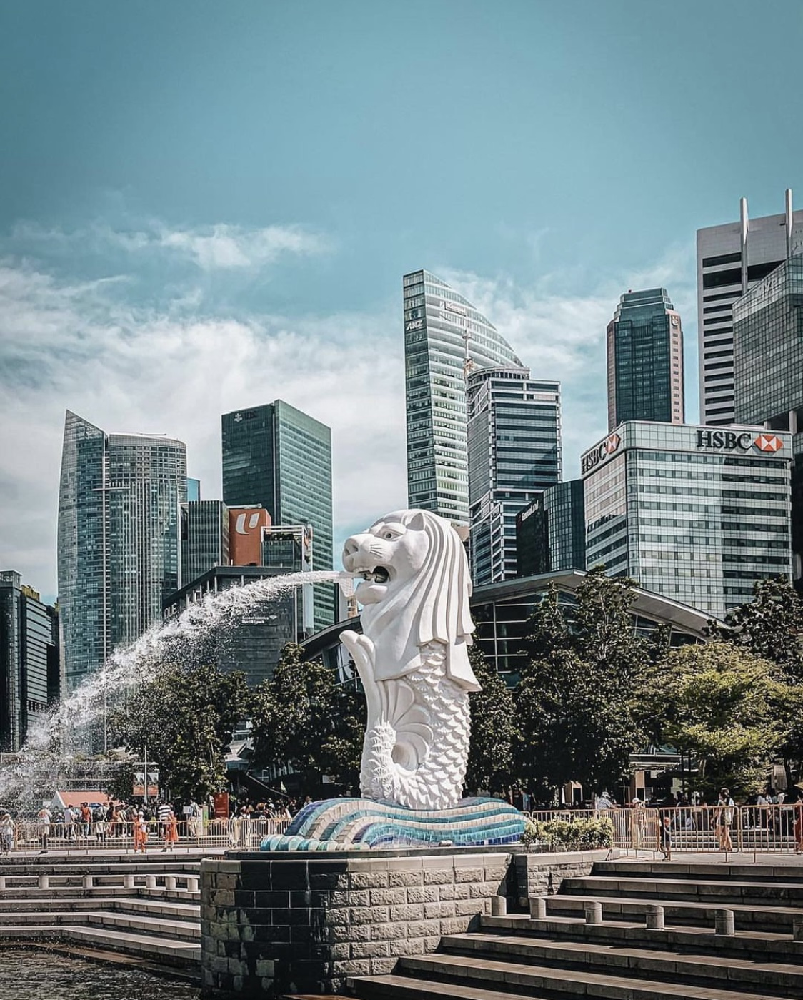
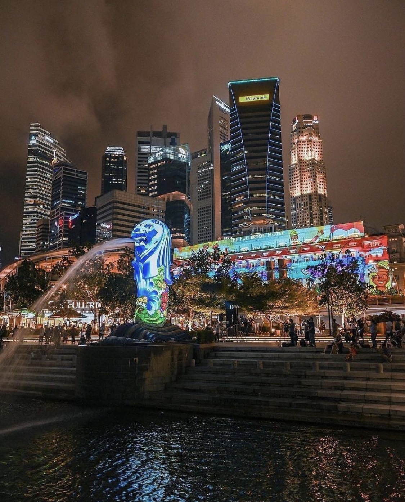
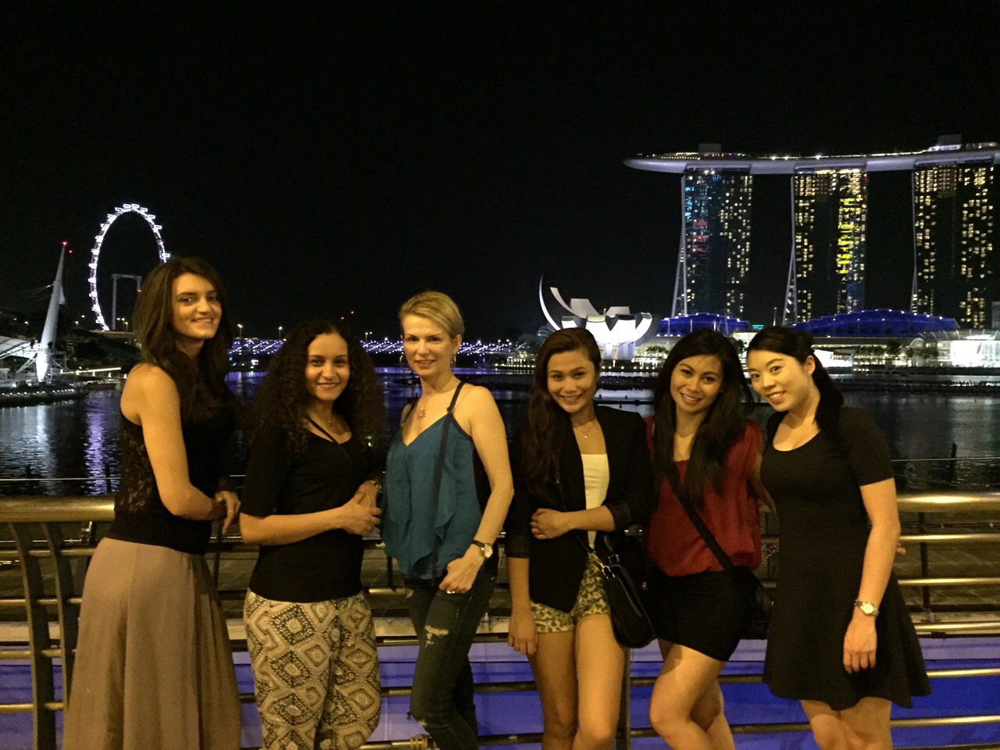
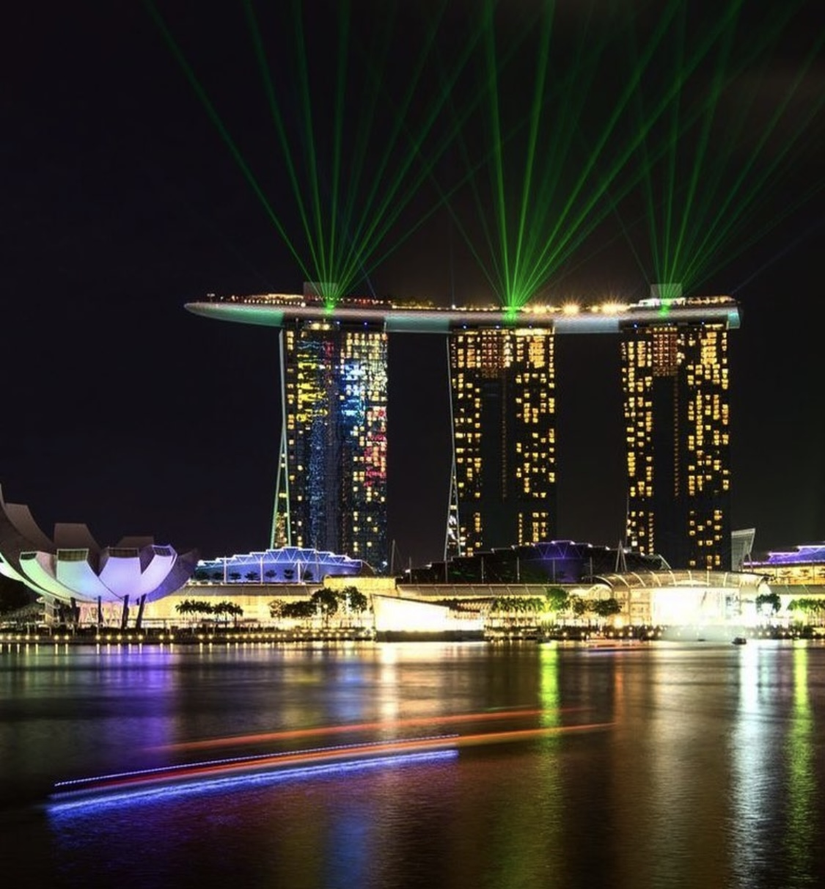

Before going to Singapore
When I used to fly, we used to have this manual that is called: Cabin Crew Station Information Manual. It has the important information that we have to know about the destinations we were visiting, and we have to tell passengers onboard relevant to the places they are landing into. The first thing that was really striking to know about Singapore is that smoking, chewing gum and CDs are not allowed to be brought in Singapore. We actually have to make an announcement of that before landing. If customs officials catch any person carrying these items, then you would face serious delays, prosecution and of course a huge fine, or in some cases non admittance into Singapore. I was quite surprised and I was asking my Singaporean colleagues if they miss eating chewing gum, and surprisingly they said they definitely do. Some of them the first thing they get to do when they go abroad is to buy a packet of chewing gum.
The other important piece of information is to check the weather in Singapore before traveling. Singapore is very warm throughout the year, and it is very humid. Basically, all that is needed are light summer clothes and footwear. However, as necessary actions just take an umbrella and rain shoes, because as they say: when it rains it pours
Skyline of Singapore and the View taken from the flight


First Impression that I got When I arrived in Singapore
I never felt that I’m on an island in Singapore. I can somehow compare it to Dubai as it is very diverse and multicultural. It is very modern, full of tall skyscrapers, luxurious big shopping malls and it is very clean and very safe to go out at any time of the day or night. The rhythm of life in Singapore is so fast and so high tech. There are people from everywhere, and a lot of foreign expats who are living there as well. Singaporeans will never make you feel like a tourist, they are actually kind of used to the tourists or foreigners living on their island, so it became so hard to differentiate between who is coming for tourism or who is living there. It did not bother me at all, but for some travelers they like to feel pampered and looked after by the native people, such as in Thailand for example. On the contrary, in Singapore natives leave you alone and they do not bother you at all which was totally fine with me, but I also do understand that some tourists expect the opposite.
What to do in Singapore?
Singapore is full of attractions and things to do the whole day and and all night. I consider myself lucky because my airline used to book us at the Swissotel the Stamford, which is considered in the heart of the city, and most of the important attractions are within walking distance. Some of the high floor rooms in that hotel have spectacular views of Singapore from their balconies.The things you must see before leaving Singapore and are within walking distance if you are downtown are:
1. The Iconic Merlion Statue, which is a statue that has the body of the fish and the face of the lion, and it is spouting water out of its mouth. It is beautiful to see during the day or during the night as they have attractive light effects on it at night time. While being there in that location, there is a beautiful park called the Merlion park, where you can take a nice stroll across it, and that location has a beautiful view where you can spot the well known Marina Bay Sands.
Images: Merlion Statue
 2.The Marina Bay Sands, you can book a night at that hotel to enjoy the various facilities or just take a walk around it as you will capture nice pictures of its view. Tourists are very attracted to it for having the world’s largest casino, and to check out the 3 huge towers that are topped with an infinity swimming pool. You only get to use the swimming pool, if you have a room booked there which is really worth it. When you swim in that pool, you will feel as if you are floating and swimming in the sky among the clouds, and you will also get to see Singapore from above which is really stunning.
Images: The night view of Marina Bay Sands with my onboard team & its swimming pool
 
3. The Clarke Quay District, people usually visit it during the night time, as it has an amazing boardwalk by the marina, and it has well-known seafood restaurants, where you can try the chili crab dish. The chili crab dish is a must if you are a seafood lover, where they take it out of big aquariums and cook it freshly for you. They are open till very late at night too.
Images: Night Time in Clarke Quay


Some of the tourist sites require that you book them in advance, as they are not located downtown, however they are worth visiting. You have to go way earlier before opening times because waiting queues are too long and they take time, whether you start your visit, or at the end when you wait for transport to get back. The ones in my opinion that are worth visiting are:
1. Sentosa Island is a resort that has a lot of water sports activities on man-made beaches off the coast of Singapore. It has an aquarium, golf courses and theme parks if you like to enjoy rides. It is kind of similar to Sun City in Johannesburg in South Africa which is also worth visiting in my opinion.
Images: Sentosa Island


2. Jurong Bird Park is a park that has plenty of bird species where you can enjoy watching shows with the birds in open areas in the park. It is a perfect place to visit for families with kids. You also get to take pictures with parrots, and get the chance to view the penguins.
Bird Park & Night Safari


3. Singapore Zoo is so far the place I liked the most in Singapore. It stands out from the rest because you can visit it as a zoo at day time, to enjoy the wildlife creatures, and also you can come one more time at night time to do a night safari, which is very thrilling and exciting. The zoo has trains, and hiking trails to spot the elephants, tigers, leopards and many other animals to see and feel the excitement about
4. The Universal Studios Singapore, it is a movie amusement park with Hollywood themes and rides, and some live shows that happen there at theaters. This is another fun place to visit for people with families and kids.
Districts Worth Visiting in Singapore
Since Singapore is a multicultural and cosmopolitan destination, you find districts that represent communities there, such as: Little India. It is a very colorful neighborhood, where it has a lot of Indian temples especially during the Diwali celebration, traditional Indian markets where you can buy silk and jewelry and lots of Indian cuisine restaurants. There is also another district called: Chinatown. Chinatown reflects the ethnic background roots of Singapore's Chinese culture. There are lots of heritage museums there, and plenty of Chinese food options to try from, as Chinese food there is very popular. It is like open traditional fares of Chinese restaurants where people get to indulge in eating noodles, fried rice, satay and Hainanese chicken rice. Last but not least is the: Arab Street. I visited the Arab Street quite often and I think the reason is that I am an Arab myself, and also due to the fact that I’m a picky eater. Once you step with your foot into the Arab street, you will feel like you are in the Middle East all of a sudden. It is full of shops that have Lebanese, Syrian, Egyptian, Iraqi, Palestinian and many other Arab country cuisines. There are a lot of Arabs that visit Singapore every year, and especially from the Gulf countries. I used to meet some of the passengers in that street who were with me on the flight from Abu Dhabi to Singapore, or would fly with me from Singapore back to Abu Dhabi, and they would tell me on the flight that they saw me there last night.
Images: Arab Street


Images: Chinatown


Images: Little India


Islandness in Singapore
I find it extremely difficult to feel or incorporate the concept of Islandness and all the meanings that it carries while being in Singapore. I went there several times, and each time I did not feel that I’m on an island. The feeling it gave me was that of being in a modern city, very well advanced and developed. I could not feel the sense of being surrounded by water, or being on the edge or periphery. I could not feel isolation, resilience or separation. I also could not relate there to the concept of sun, sea and sand, as it is full of modern tall buildings, companies and shopping malls, which all make it difficult to reflect on the idea of islandness.
The people of Singapore are very diverse, you can find Indian Singaporeans, Malay Singaporeans and Chinese Singaporeans. Together with the large number of tourists and foreigners living over there, it gives you the feeling of more of a city than of an island. There, you do not get to feel the difference between natives, tourists or expats. Also, most of the people who visit Singapore go there by planes and not by ferries or boats. This is my own personal view of course, and I’m not criticizing Singapore or anything, in fact I loved going there so much during those flights I had there. It is just very different, to me it is a lively, vibrant industrial city that reflects the fast modern pace of life that we currently have nowadays in the mainland.